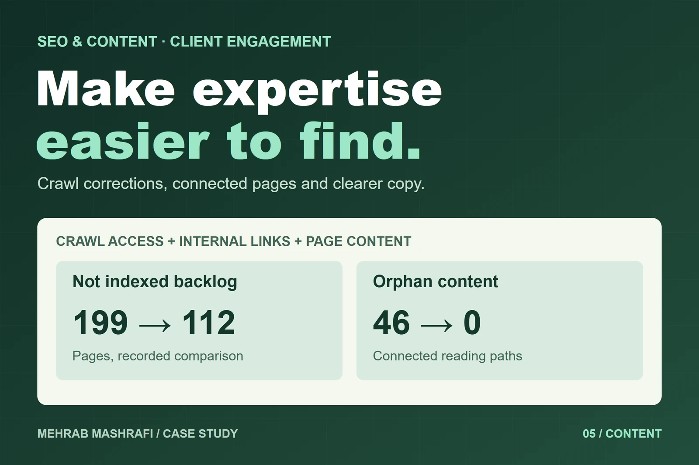
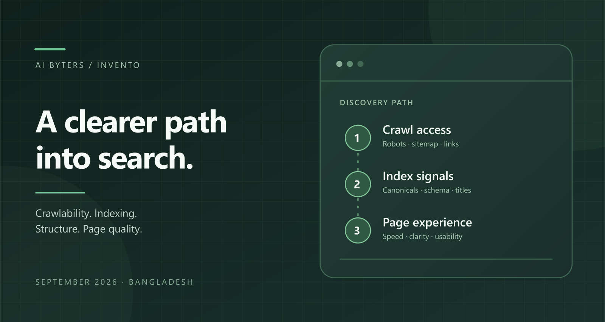

SEO & content · Client engagement
Help people find and understand Invento’s work
Invento already had commercial expertise and organic visitors. Through AI Byters, I worked on the technical access, internal reading paths and page content that helped people reach and understand that expertise.

- My role
- AI Byters engagement across technical SEO and content
- Work
- Crawl signals, internal linking, page structure and experience
- Project context
- Client engagement, 31 August to 7 October 2026
01 / Situation
Useful expertise needs a route into the site.
Invento’s baseline included crawl problems, isolated content and pages that did not explain the company’s work clearly. A visitor could miss useful information even when the expertise behind it already existed.
The work had two connected jobs: make the right pages accessible to search engines, and make their purpose clear to readers. Better copy would not resolve a crawl issue; a technical correction alone would not explain a service.
02 / My contribution
Work across access, structure and content.
My work through AI Byters covered technical SEO, content structure and the page experience. The engagement began with an August baseline and checked the resulting publishing changes through early October.
We corrected crawl signals, connected orphan posts and case studies, improved titles and rewrote priority content around specific reader questions. Images, scripts and structured data were part of the page work alongside the words.
I treated technical fixes and editorial changes as separate responsibilities within the same engagement, so that a rewritten page still needed its access and performance checks.
Three checks, three different meanings
| Measure | Baseline | Later check |
|---|---|---|
| Pages not indexed | 199 | 112 |
| Orphan posts and case studies | 46 | 0 |
| Good desktop Core Web Vitals | No baseline comparison | 90 URLs |
03 / Decisions
Give each page a place in the reading journey.
Internal links connected isolated posts and case studies to useful reading paths. This was more than adding links to a page: it gave readers a way to move from a question to related evidence of Invento’s work.
Priority copy was organised around the question the page should answer. Titles and content structure helped a visitor identify the subject and decide whether to keep reading.
Verification considered the indexing backlog, orphan content and desktop Core Web Vitals groups separately. Each describes a different part of the publishing system.

04 / Outcome
A smaller backlog and connected content.
Between the recorded baseline and the early October checks, pages not indexed fell from 199 to 112. Orphan posts and case studies fell from 46 to zero. At the close, 90 desktop URLs were in Good Core Web Vitals groups.
The first two comparisons describe the backlog and content connections. The desktop status is a closing count, not a before and after performance improvement, and it does not describe mobile results.
These changes improved the site’s publishing foundation. They do not isolate a sales effect or guarantee a search position; later visibility also depends on demand, competition and subsequent site changes.
Explore the implementation
Open the work
Is your content difficult to reach or understand?
Bring a priority page, the question it should answer and the path readers take to reach it.
Discuss a site review ↗ Email meProject experience by Mehrab Mashrafi. Updated .